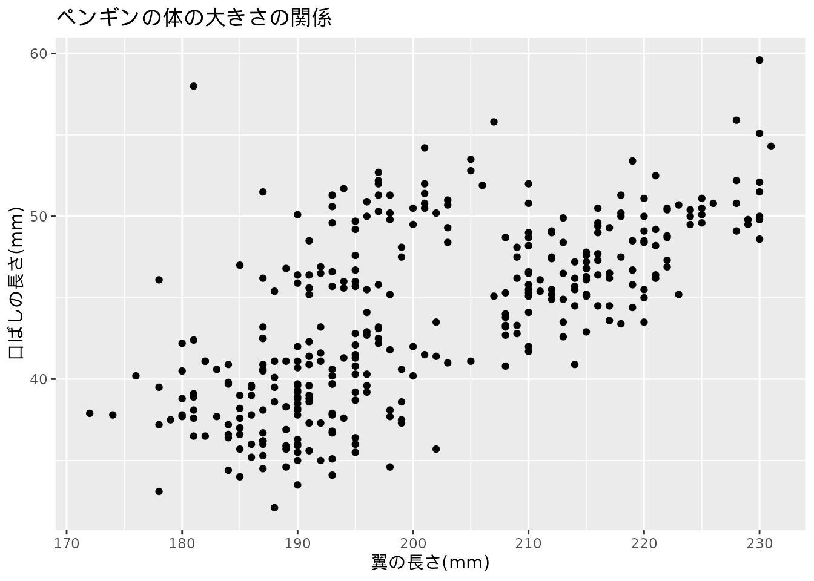
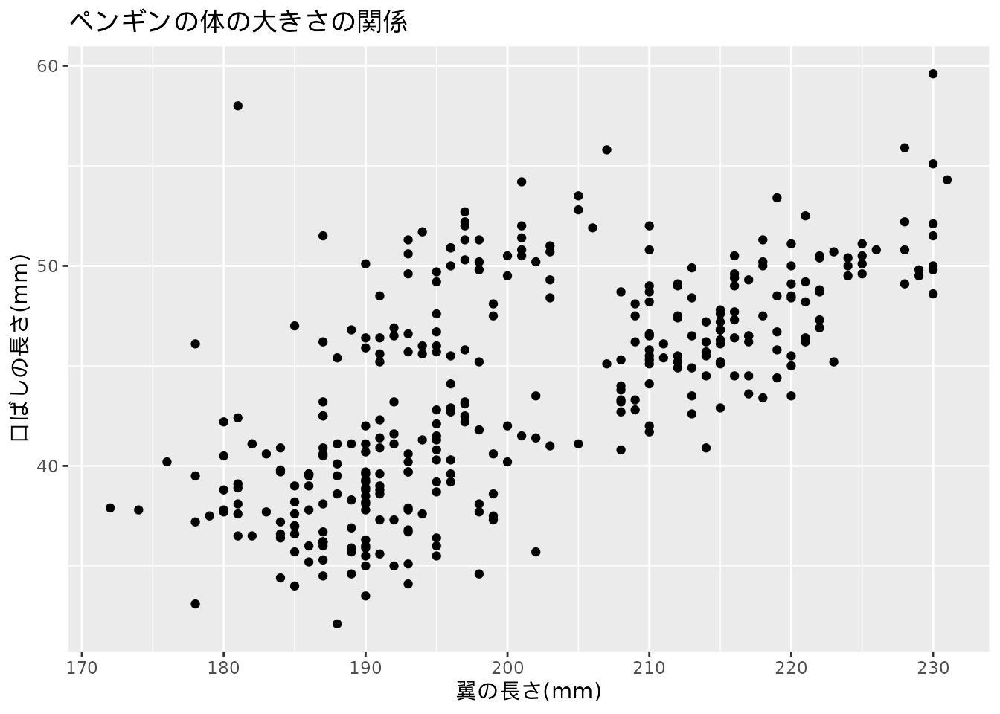
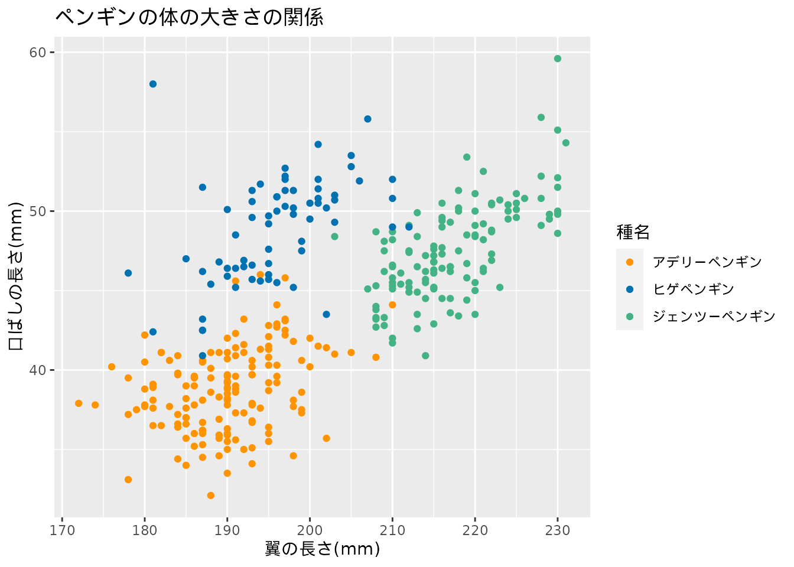

コードを表示
library(ggplot2)
library(palmerpenguins)
p <-
ggplot(penguins, aes(flipper_length_mm, bill_length_mm)) +
xlab("翼の長さ(mm)") +
ylab("口ばしの長さ(mm)") +
labs(title = "ペンギンの体の大きさの関係")
p +
geom_point()
私たちは日常中で多くのデータに触れながら暮らしています。 データを扱う計算機の処理性能の向上やインターネット回線の高速化、 そしてスマートフォンの普及により、ビッグデータと呼ばれる莫大な量のデータが身の回りに溢れています。
データと触れている、といってもデータは実体がなく、認識しづらいものです。 データとは一体何でしょうか。 辞書を引いて確認してみますと、「判断や立論のもとになる資料・情報・事実」とあります。 物事を判断、何かについて議論するための材料といったところでしょうか。 材料であるデータは、ある対象について調査、観測や実験などを行うことで得られます。 そこにはたくさんの情報が含まれていることが多いです。
例えば、ある個人の一日の行動を調査し、データ化するとします。 その場合、生年月日や氏名、住所や一日の行動（何時にどこへいたか）などが情報として扱われます1。 一方でこうしたデータを蓄積しただけでは、情報の羅列となり、あまり意味がありません。 集めたデータをもとにして、分析を行うことで見えてくるものがあります。 データから得られる情報を読み解き、データを人間が利用できる形に変換・処理を行うことで対象についての理解や予測を目指す手続きを「データ分析」と呼びます。
データ分析には次の目的があります。
要約とは物事の中心となる大切な部分を短くまとめることです。 一般的にデータ分析の対象となるデータは膨大です。 そのため一つ一つのデータを見ていくことは難しいです。 そこでデータを要約する方法として代表値によるデータの集約やグラフによるデータ可視化が行われます。 この方法について、コースの中でも第3章と第5章で扱います。
２つ目の目的として、データがもつ意味やデータに含まれる値の関係性を説明することがあります。 例えば、動物園で飼育されるペンギンの各個体について、体の部位を測定したデータを集めたとします。 そのとき、体の部位ごとにどのような意味、関係があるかを説明する場合、データ分析が役立ちます。 これについては第4章で議論します。
またデータを説明するためにはグラフ上にデータを投影することも有効な手段となります。 データ可視化と呼ばれる手法はデータ分析の歴史とともに発展してきました。 第5章でさまざまなデータ可視化の方法を見ていくとともに実際にグラフを作る方法を学びます。
データの関係を説明する簡単な例をみてみましょう。 次に示す 図 1.1 は、ペンギンの各個体の大きさを記録したデータをグラフ化したものです。 この図からどのようなことが言えるでしょうか。
library(ggplot2)
library(palmerpenguins)
p <-
ggplot(penguins, aes(flipper_length_mm, bill_length_mm)) +
xlab("翼の長さ(mm)") +
ylab("口ばしの長さ(mm)") +
labs(title = "ペンギンの体の大きさの関係")
p +
geom_point()
図 1.1 のようなグラフを散布図（または相関図）と呼びます。 散布図は２つのデータの関係を示すのによく使われます。 ここではグラフの下部と左側に表記がある通り（それぞれx軸、y軸と言います）、 「翼の長さ」と「口ばしの長さ」を示しています。 軸の横に書かれている数値はその大きさです。 一つ一つの点がペンギンの個体を表しています。
図 1.1 を見ると、翼の長い個体ほど口ばしも長いと言えるような気がします。 そこでデータ分析では「ペンギンの個体は翼の長い個体ほど口ばしも長い」という仮定を置きます。 この仮定を説明するために、データ分析ではデータの間の関係を説明する「モデル」を考えます。
また、先ほどのペンギンデータは実は複数のペンギンの種名2について調べたデータだったとします。 このとき、体の部位の関係の説明にペンギンの種名という、もう一つのデータが加わることになります。 そこで 図 1.1 の図に手を入れて、種類ごとに色分けした図を見てみることにします (図 1.2)。
source("scripts/color_palette.R")
p +
geom_point(aes(color = species)) +
scale_colour_tokupon(name = "種名",
labels = c("アデリーペンギン", "ヒゲペンギン", "ジェンツーペンギン"))
図 1.2 では、最初の仮定（翼の長さと口ばしの長さが比例して大きくなる）が変わることはなさそうです。 しかしペンギンの種類によって体の部位の大きさには幅が決まっていそうだ、ということも見えてきました。 具体的にはアデリーペンギン、ヒゲペンギン、ジェンツーペンギンの順番で体の大きさに違いがあるようです。 これも新たな仮定としておきましょう。 この仮定を調べるためのモデルも存在します。 こうしたデータ間の比較（2つあるいは3つ以上のものを比べ、そこにある違いを考えること）もデータ分析で扱う内容です。
データ分析の最後の目的は、新たに得られるデータに対する予測を行うことです。 これまでに集めたデータや構築したモデルから、新たなデータへの予測を行います。 モデルが存在することで、ある程度の未知のデータに対する予測が可能になります。 ペンギンの体の大きさの例で見たように、翼の長さがわかれば、口ばしの長さに対する見通しが立ちます。 また、ある程度の大きさであれば種類まで特定できるかもしれません。
データ分析を行うために、数学の知識が活用できます。 特に統計学や機械学習では、数学を用いたデータ分析の手法を扱います。 数学は理系の印象がありますが、データ分析では文理問わず求められる技能なのです。 しかし数学はデータ分析において必須ではありません。 この書籍の中でも高度な数学を用いずにデータ分析を行う方法や、データを表現する可視化の手法について紹介します。
データ分析に加えて、データの処理の実行、データから新たな価値を生み出す分野をデータサイエンスと呼ぶよ。 データ分析の技能だけじゃなくて、データを適切に処理することやデータを活用できることが重要になっているんだね。 また、こうしたデータサイエンスの素養をもつ人はデータサイエンティストと呼ばれるよ。
データサイエンスでは情報学と統計学の基礎が求められる一方で、応用先は人や社会であることが多いんだ。 だからこそ文理融合的な学習が必要とされているんだね。
データ分析はいくつかの作業に分けて考えることができます。 まずデータ分析によって解決したい課題や適切なデータを見つける段階があります。 これらの内容は課題ごとに異なります。 その後、典型的な手順に落とし込むことが可能となります。
図 1.3 は一般的なデータ分析の手順を示したものです。 まずデータを入手し、コンピュータが扱えるように読み込みます。 続いて、その後の処理が行いやすいように整形を行います。 多くのデータは人間が解釈しやすいように記録されています。 その形はコンピュータやプログラムで利用できる状態でないことがしばしばあります。 また、データ化に伴う不備や正しく読み取れないデータというのも存在します。 こうした問題に対する処理もデータ分析では必要になります。
データを正しく読み取り、プログラムで扱いやすい形式に加工したら、 データ分析の主要な部分である加工、可視化、モデルの作業です。 可視化とは、図表を用いてデータを表現することを意味します。 これらの作業は一方向的なものではなく、互いに繋がっています。 例えば、モデルの作成のためにデータを加工する、加工したデータを使って可視化をする、 といった具合です。
これらの作業を繰り返し、最終的な伝達が行われます。 データ分析の目的で触れたように、データ分析は行っただけで終わりではありません。 レポートの作成やプレゼンテーションなど、何らかの方法によりその内容を伝えなくてはいけません。
データから得られた情報が有効活用された例を2つ紹介します。 まずは1854年にロンドン（イギリス）で発生したコレラの大発生に対する ジョン・スノウによる活躍です。
当時コレラは未知の疫病で多くの死者を出していました。 この原因不明の病いは空気中の粒子や未知の細菌が原因と考えるのが科学者や政府の考えであり、 それに基づく政策が行われていました。 人々が密集するロンドンの街では、下水の整備が追いつかず、排泄物の処理が十分に行われていませんでした。 このことがコレラの流行に繋がると考えた役人は、下水を整備し汚物を川に流すというものでした。 しかしこの政策によってもコレラの患者が減ることはありませんでした。
コレラの原因と考えられていた空気感染に対して疑問を持っていたジョン・スノウは、地元住民らへの聞き込み調査等を行い、最終的にコレラの発生源が、水道ポンプであると特定しました。 その結論に至るまでにジョン・スノウがとった行動は以下に整理できます。
確証がないとの理由から、残念ながらジョン・スノウが導いた細菌に汚染された水が問題であるとする意見は政府に受け入れられた訳ではありませんでしたが、ジョン・スノウは得られたデータ（患者が使用していた井戸水の位置と井戸水を供給する水道会社）をもとに原因解決のために働きます。 問題となる井戸を特定したり、死者が発生した家で利用される水道会社の比較を行うことで、水の停止を求め、一部の地域ではコレラの感染を抑えることに成功しました。
ジョン・スノウはデータと分析に基づき、問題解決のために働いた人物です。 ジョン・スノウが行ったデータの比較方法や分析は、現代の疫学研究の基礎となるものでした。 そのため彼は現代では疫学の父と呼ばれています。
ジョン・スノウは住民への聞き込み調査と合わせて、コレラで死亡した人の居住地を地図上にマッピングしたんだ。 図 1.4 に示すように、一人の死者に対して黒い棒グラフを描いて死者が多い地域を強調しようとした試みがされているね。 地図にはさらに井戸の位置も表示されているよ。 これはコレラの流行の原因が、細菌に汚染された水にあると考えるジョン・スノウならではの視点だったのかもしれないね。

データを用いることで医療に貢献した人物として、もう一人、フローレンス・ナイチンゲールの例を挙げます。 近代看護教育の母として知られる人物ですが、効果的なグラフ作成を行った人物でもあります。
ナイチンゲールは1853年から1856年の間に発生していたクリミア戦争において、戦場で負傷した兵士の看護と衛生面の改善に取り組みました。戦争終了後、戦争による死者の原因を分析する中で、戦闘で負った傷が原因で亡くなる兵士よりも、負傷後に何らかの菌に感染した影響で病気となり死亡する兵士のほうが圧倒的に多いことを明らかにしました。 しかし軍はその結果を認めようとはしませんでした。 そこでナイチンゲールはデータをよりわかりやすく、明確に伝えるための工夫としてグラフを作成しました (図 1.5)。
ナイチンゲールが示したのは風変わりなグラフでしたが、単純な棒グラフ以上に関心を引きやすい、美しい画像を用意することで、政府の説得を目指したのかもしれません。
いずれの話も21世紀に入る前のものですが、なぜ今データ分析、データサイエンスが注目されているのでしょうか。 それには冒頭で述べたようにビッグデータの台頭やコンピュータの性能向上、分析手法の進展があげられます。 現代は、ジョン・スノウやナイチンゲールが活躍した時代と比べて、社会のあらゆる分野においてデータやコンピュータを活用することが当たり前になっています。
データは「21世紀の石油」と呼ばれるように、ビジネスにおいてもデータ分析を活用した課題解決が前提となっています。 データを経済的な資源として考え、それを保有・活用できる企業が大きく成長しています。 GoogleやAmazon、百度などはビッグデータを利用した企業の一例ですが、これらの企業は現代のデータ駆動型社会において他の企業よりも優位な位置を築いています。
普段の生活の中で、数値やグラフを目にする機会がたくさんあります。 天気予報や学校のテストの成績、スマートフォンやスマートウォッチで記録される歩数（図 1.6）などです。

このような数字やグラフを見た時に感じる印象は人それぞれですが、 多くの人が共感するものも存在します。
次の 図 1.7 は文部科学省が毎年行う「学校保健統計調査」から5歳の幼児（男）における都道府県別の身長・体重の平均値を棒グラフにしたものです。全国で最も順位の低い県は徳島県であることがわかります。全国一位の宮城県と比べると何倍も差があるように見えます。しかしこれはグラフのトリックです。注意して横軸を見てみましょう。

このグラフの横軸は0で始まっていないことに気がついたでしょうか。 これがグラフのトリックを引き起こしている原因です。 横軸が0からの図（図 1.8）と見比べてみましょう。

先ほどは都道府県間の差が大きく感じたものが、今度はどの県も平坦な様子に思えたのではないでしょうか。 数値が変わったわけではないので、順位に違いはありませんが見た目の印象が大きく違います。 数値で確認すると、全国一位の宮城県の5歳の男児の平均身長は112.8cmで徳島県では110.1cmで、その差は2.7cmです。 図 1.7 で何倍も開きがあるように感じた印象ほどではないと思える数値ではないでしょうか。
数字やグラフにはある種の説得力が存在します。 目に見えるものが示す内容を鵜呑みにして物事を判断してしまうことは危険です。 テストの点数がクラスの平均よりも低かったからと言って、クラスの上位に含まれていないとは限りません（逆もあります）。 また、最近では一日の新型コロナウィルス感染症の新規感染者数が報道されますが、悲観的になり過ぎる心配はない場合もあります。
目に見えるデータやグラフには、それを見せる側の意図が存在します。 平均身長のグラフでみたように、同じデータであっても何をどう示すか、どう解釈するかで印象が変わります。 見せ方を工夫して人を騙そうとするものもあり得るでしょう。 こうしたデータ、グラフに騙されないためには、データに対する素養を鍛えることが重要です。 読み書きをする能力のことをリテラシーと言いますが、データに対するリテラシーを備えておくことが求められています。
データ分析では「モデル」と呼ばれる考え方
統計モデルを使って問題の解決に挑みます。
扱う課題が回帰問題か分類問題か
分類と回帰の問題を解くために使われるアルゴリズムは異なります。
このコースでも、発展として簡単な回帰と分類問題に挑戦します。
このコースではR言語を使った実習を行うよ。 R言語は統計計算と作図の機能に優れたプログラミング言語の一種だよ。 オープンソース・フリーソフトウェアと言って、誰もが自由に使うことができるんだ。
R言語に関心を持ったなら、付録の「Rのイロハ」を見てみてね。
Rのインストール方法、簡単な使い方を紹介するよ。